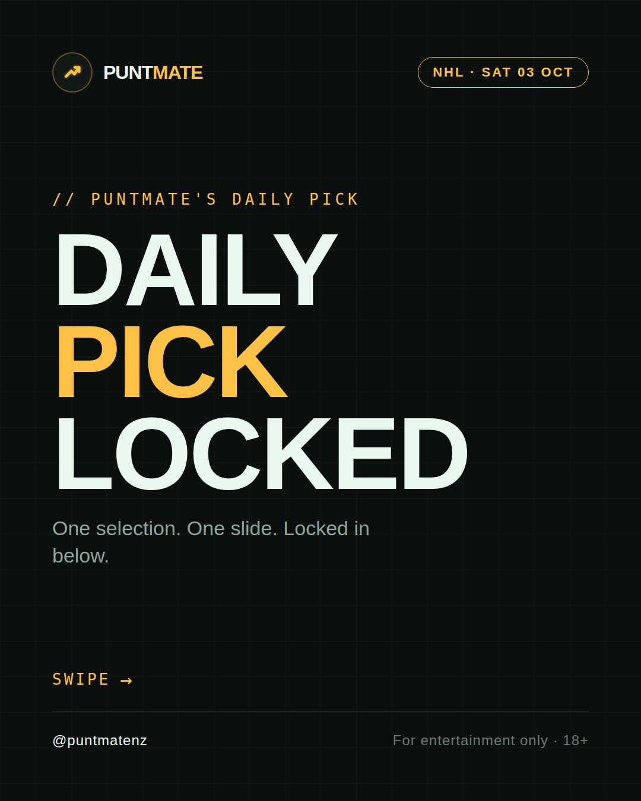
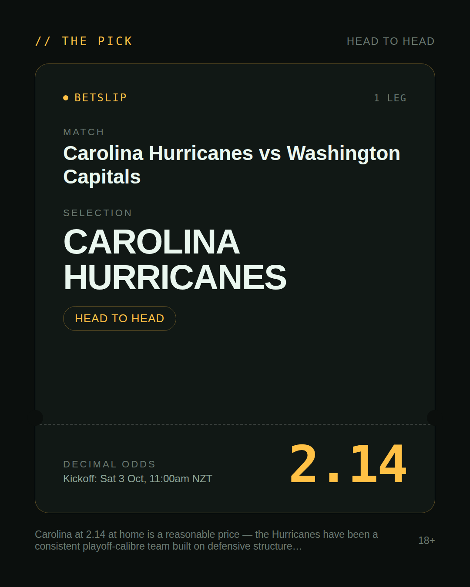
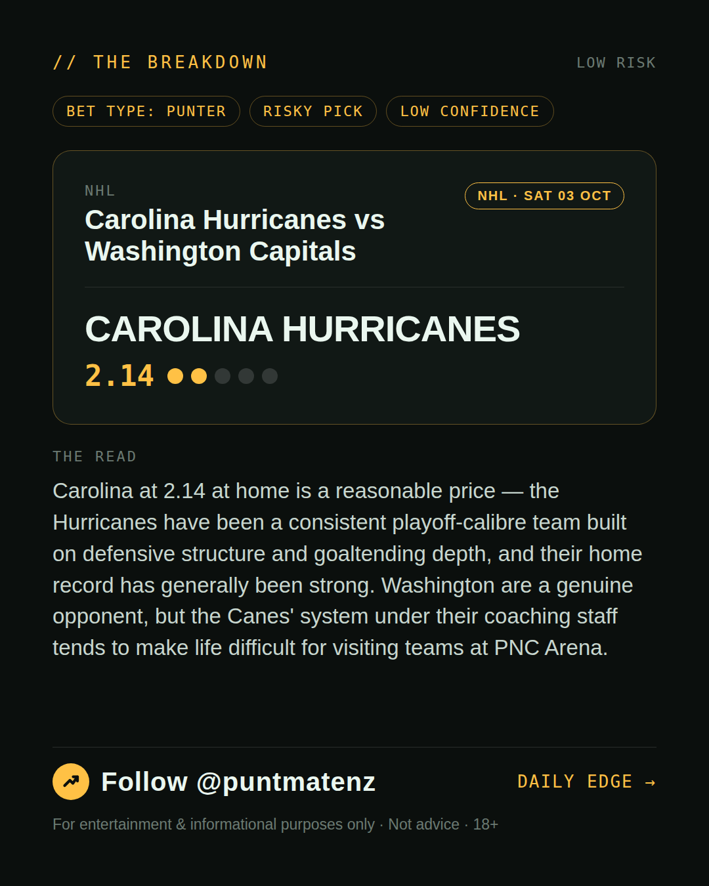
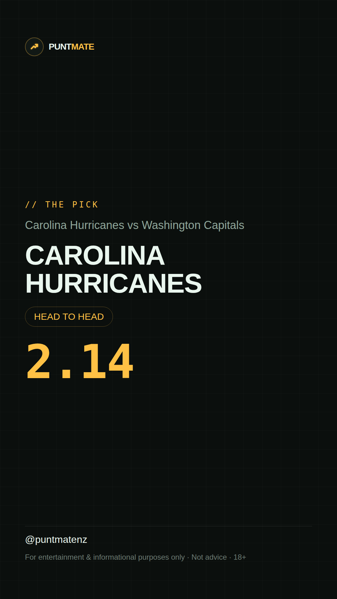

*🎯 PUNTMATE NZ — NHL* 🏟 Carolina Hurricanes vs Washington Capitals *PICK:* CAROLINA HURRICANES *ODDS:* 2.14 (Head to Head) *BET TYPE: PUNTER* _Carolina at 2.14 at home is a reasonable price — the Hurricanes have been a consistent playoff-calibre team built on defensive structure and goaltending depth, and their home record has generally been strong. Washington are a genuine opponent, but the Canes' system under their coaching staff tends to make life difficult for visiting teams at PNC Arena._ ────────────────── 📲 Join Telegram for daily picks ⚠️ For entertainment & informational purposes only. Not advice. 18+.
🎯 NHL — Carolina Hurricanes vs Washington Capitals CAROLINA HURRICANES @ 2.14 (Head to Head) BET TYPE: PUNTER Solid touch here. Not a lock, but the value's real and the form backs it up. Carolina at 2.14 at home is a reasonable price — the Hurricanes have been a consistent playoff-calibre team built on defensive structure and goaltending depth, and their home record has generally been strong. Washington are a genuine opponent, but the Canes' system under their coaching staff tends to make life difficult for visiting teams at PNC Arena. Follow for daily value picks → @puntmatenz ⚠️ For entertainment & informational purposes only. Not advice. 18+. #PuntmateNZ #SportsBetting #NZTAB #NHL
| has_pick | True |
| pick_id | 2026-10-01_Carolina_Hurricanes_vs_Washington_Capitals |
| run_id | 36942793137 |
| generated_at | 2026-10-01T23:50:42.965531+00:00 |
| post_date | 2026-10-01 |
| match | Carolina Hurricanes vs Washington Capitals |
| sport | icehockey_nhl |
| sport_label | NHL |
| market | Head to Head |
| selection | CAROLINA HURRICANES |
| odds | 2.14 |
| bet_type | PUNTER_BET |
| bet_type_label | BET TYPE: PUNTER |
| bet_type_reason | Solid touch here. Not a lock, but the value's real and the form backs it up. Carolina at 2.14 at home is a reasonable price — the Hurricanes have been a consistent playoff-calibre team built on defensive structure and goaltending depth, and their home record has generally been strong. Washington are a genuine opponent, but the Canes' system under their coaching staff tends to make life difficult for visiting teams at PNC Arena. |
| classification | RISKY_PICK |
| risk | RISKY_PICK |
| confidence | LOW |
| confidence_label | LOW |
| final_explanation | Carolina at 2.14 at home is a reasonable price — the Hurricanes have been a consistent playoff-calibre team built on defensive structure and goaltending depth, and their home record has generally been strong. Washington are a genuine opponent, but the Canes' system under their coaching staff tends to make life difficult for visiting teams at PNC Arena. |
| public_caution | Keep this one light — the value's there but so is the uncertainty. |
| theme | night |
| carousel_paths | ['data/review/2026-10-01_Carolina_Hurricanes_vs_Washington_Capitals/cover.png', 'data/review/2026-10-01_Carolina_Hurricanes_vs_Washington_Capitals/tip.png', 'data/review/2026-10-01_Carolina_Hurricanes_vs_Washington_Capitals/breakdown.png'] |
| carousel_urls | ['https://raw.githubusercontent.com/kingofthecastle24/puntmate/main/data/cards/2026-10-01_Carolina_Hurricanes_vs_Washington_Capitals_night_1_cover.png', 'https://raw.githubusercontent.com/kingofthecastle24/puntmate/main/data/cards/2026-10-01_Carolina_Hurricanes_vs_Washington_Capitals_night_2_tip.png', 'https://raw.githubusercontent.com/kingofthecastle24/puntmate/main/data/cards/2026-10-01_Carolina_Hurricanes_vs_Washington_Capitals_night_3_breakdown.png'] |
| story_path | data/review/2026-10-01_Carolina_Hurricanes_vs_Washington_Capitals/story.png |
| story_url | https://raw.githubusercontent.com/kingofthecastle24/puntmate/main/data/cards/2026-10-01_Carolina_Hurricanes_vs_Washington_Capitals_night_story.png |
| intended_platforms | ['telegram', 'instagram_feed', 'instagram_story', 'facebook'] |
| workflow_state | GENERATED |
| has_punter_multi | False |
| has_gambler_multi | False |
| has_degenerate_multi | False |